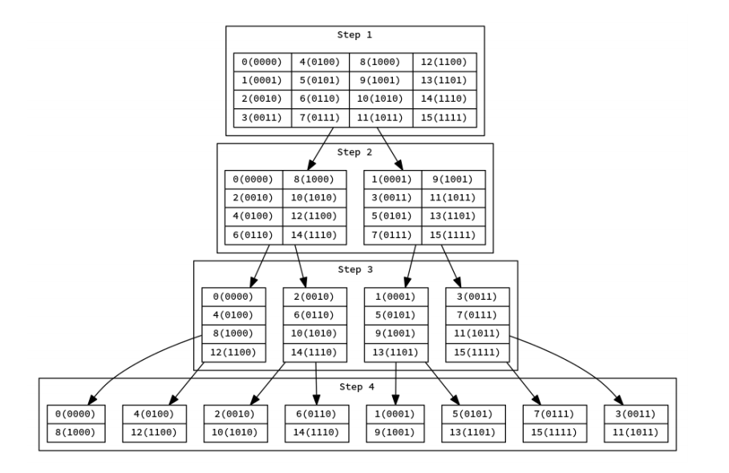
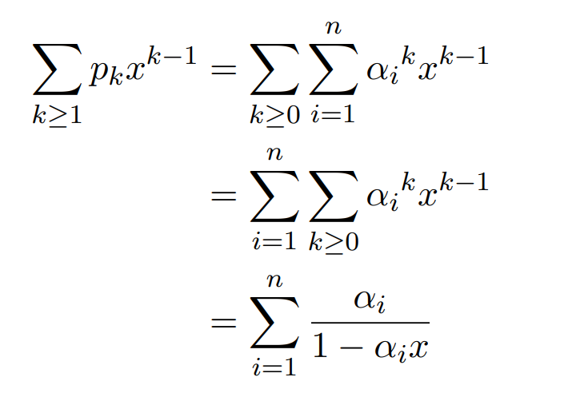
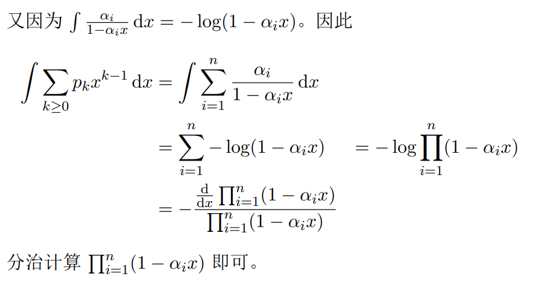
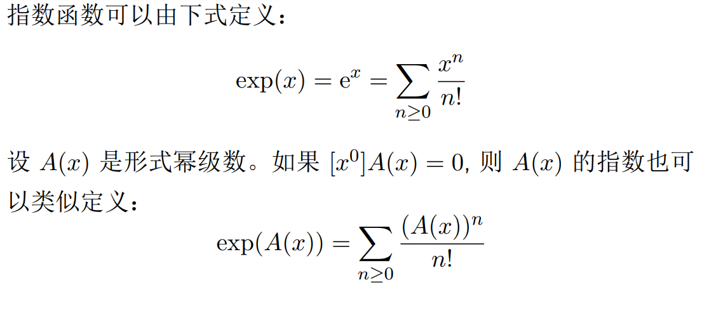
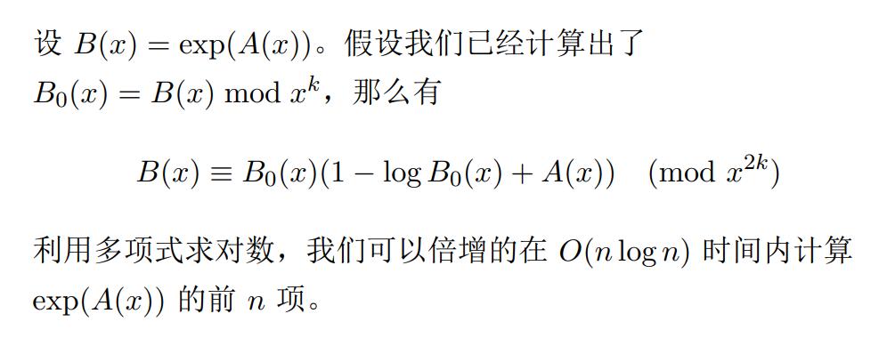

基础多项式
快速傅里叶变换
多项式
一个环 \(R\) 上的关于 \(x\) 的多项式可以写作 \[ A(x) = \sum_{i=0}^na_ix^i \]
其中 \(a_i \in \mathbb{R}\)
\(x\) 被称为这个多项式的自由元
多项式的次数被定义为其最高非零次项的次数，记为 \(\deg A(x)\)
多项式运算
设 \(A(x),\; B(x)\) 是次数不超过 \(n\) 的多项式
那么加法和减法运算被定义为： \[ A(x) \pm B(x) = \sum^n_{i=0} (a_i \pm b_i)x^i \] 显然可以在 \(O(n)\) 时间内计算这两个多项式的和或差
卷积
设 \(a, b\) 是两个数列，那么这两个数列的卷积 \(c\) 的定义为 \[ c_k = \sum_{i+j=k} a_ib_j \]
多项式乘法
两个多项式的乘积被定义为： \[ A(x)B(x)=\sum_{i=0}^n\sum_{i=0}^na_ib_jx^{i+j}=\sum_{k=0}^{2n}c_kx^k \] 其中 \(c\) 是 \(a\) 与 \(b\) 的卷积
朴素的按定义计算多项式乘法的时间复杂度是 \(O(n^2)\) 的
多项式点值表示
给定一个不超过 \(n\) 次的多项式 \(A(x)\) 以及 \(n + 1\) 个不同的点 \(x_0,\cdots,x_n\),令 \(y_i = A(x_i)\)
则这 \(n + 1\) 组 \((xi , yi)\) 唯一的确定了这个多项式 \(A(x)\)
这些 \((x_i,y_i)\) 称作这个多项式的点值表示
如果给出 \(A(x)\) 和 \(B(x)\) 分别在 \(x_0,\cdots,x_n\) 下的点值，则可以在 \(O(n)\) 时间内得到 \(A(x) \pm B(x)\) 或 \(A(x)B(x)\) 在同一组位置处的点值
系数与点值表示
给出 \(n\) 次多项式 \(A(x)\) 的各项系数，可以通过求值计算多项式的点值表示
给出 \(n\) 次多项式 \(A(x)\) 的点值表示，可以通过待定系数，解方程得到多项式的各项系数
得到多项式的各项系数
如何在多项式的系数和点值表示之间快速转换？
这促使我们考虑一组特殊的点值
单位根
满足 \(x^n−1=0\) 的 \(x\) 被称作 \(n\) 次单位根
设 \(\omega\) 是 \(n\) 次单位根
如果 \(ω_0,ω_1,\cdots, ω_m(m=n-1)\) 恰好生成了所有的 \(n\) 次单位根（即两两不同），则称 \(ω\) 为本原单位根
这等价于 \(n\) 是 最小的使得 \(\omega^n−1=0\) 的正整数。我们用 \(\omega_n\) 来表示一个 \(n\) 次本原单位根
在复数域 \(\mathbb{C}\) 上，\(\omega_n = \exp(\frac{2πi}n)=\cos\frac{2π}n +i\sin\frac{2π}n\) 是一个本原单位根
下文首先考虑 \(\mathbb{C}\) 上的多项式
在有限域（即模素数的情况）中，本原单位根与数论中的原根有关
离散傅里叶变换
设 \(a\) 是长度为 \(n\) 的数列，对 \(0 \le k < n\)，令 \[ b_k=\sum_{i=0}^{n-1}a_i\cdot{\omega_n}^{ki} \] 则称 \(b\) 为 \(a\) 的离散傅里叶变换 \((DFT)\) ，记作 \(b = F(a)\)
容易看出，令 \(A(x) = \sum a_ix^i\)，则 \(b_k\) 就是 \(A(x)\) 在 \({ω_n}^k\) 处的点值
因此计算 \(a\) 的 \(DFT\) 与计算 \(A(x)\) 在 \({\omega_n}^0,{\omega_n}^1,\cdots,{\omega_n}^{n−1}\) 处的点值表示是等价的
##离散傅里叶变换的逆变换
对于长度为 \(n\) 的序列 \(a, b\)，回忆 \(DFT\) 的定义 :
\[ b_k=\sum_{i=0}^{n-1}a_i{\omega_n}^{ki}(0\le k<n)\qquad(1) \] 下面我们来证明 \((1)\) 的逆变换\((IDFT)\)如下 : \[ a_k=\frac 1n\sum_{i=0}^{n-1}b_i{\omega_n}^{-ki}(0\le k<n)\qquad(2) \]
考虑将\((1)\)代入\(b_i\), 有: \[ \begin{align*} \sum_{i=0}^{n-1}b_i{\omega_n}^{-ki}&=\sum_{i=0}^{n-1}{\omega_n}^{-ki}\sum_{j=0}^{n-1}{\omega_n}^{ij}a_j\\ &=\sum_{j=0}^{n-1}a_j\sum_{i=0}^{n-1}{\omega_n}^{-ki}{\omega_n}^{ij}\\ &=\sum_{j=0}^{n-1}a_j\sum_{i=0}^{n-1}{\omega_n}^{i(j-k)} \end{align*} \] 我们考虑式子中的\(\sum\limits_{i=0}^{n-1}{\omega_n}^{i(j-k)}\)这一部分
若 \(j=k\) , 则 \[ \sum_{i=0}^{n-1}{\omega_n}^{i(j-k)}=\sum_{i=0}^{n-1}1=n \] 若 \(j=k\), 则由 \(0\le j, k\le n\), 有\(|j-k| < n\), 故\({\omega_n}^{j-k}\ne1\)
因此可以由等比数列数列求和的结论得到 \[ \begin{align*} \sum_{i=0}^{n-1}{\omega_n}^{i(j-k)}&=\sum_{i=0}^{n-1}({\omega_n}^{j-k})^i\\ &=\frac{1-({\omega_n}^{j-k})^n}{1-{\omega_n}^{j-k}}\\ &=\frac{1-({\omega_n}^n)^{j-k}}{1-{\omega_n}^{j-k}}\\ &=\frac{1-1}{1-{\omega_n}^{j-k}}=0 \end{align*} \] 因此, 有 \[ \begin{align*} \frac 1n\sum_{i=0}^{n-1}b_i{\omega_n}^{-ki}&=\frac 1n\sum_{i=0}^{n-1}{\omega_n}^{-ki}\sum_{j=0}^{n-1}{\omega_n}^{ij}a_j\\ &=\frac 1n\sum_{j=0}^{n-1}a_j\sum_{i=0}^{n-1}{\omega_n}^{i(j-k)}\\ &=\frac 1nna_k=a_k \end{align*} \] 即\((2)\)成立
类似的，可以证明由 \((2)\) 成立可以推出 \((1)\) 成立，故这两式是互逆的
这就是 \(IDFT\)
\(IDFT\) 是 \(DFT\) 的逆变换，也就意味着已知多项式在单位根处的点值，\(IDFT\) 能够求出多项式的各项系数. 在这种意义上，这个 过程也可以看作插值
循环卷积
对于两个长度为 \(n\) 的序列 \(a, b\)，定义 \[ c_k=\sum_{(i+j)\;mod\;n\;=\;k}a_ib_j \] 则称 \(c\) 为 \(a\) 与 \(b\) 的循环卷积，记为 \(c = a ∗ b\)
关于循环卷积与 \(DFT\)，我们有如下定理：
\[ F(a*b)=F(a)\cdot F(b) \] 其中 \(\cdot\) 表示逐点乘积
快速傅里叶变换1
按定义，我们可以 \(O(n^2)\) 实现 \(DFT\) 或 \(IDFT\). 快速傅里叶变换是快速计算 \(DFT\) 的方法，时间复杂度为 \(O(n \log n)\)
当 \(n\) 为 \(2\) 的幂次的时候，我们可以使用 \(Cooley–Tukey\) 算法来实现 \(FFT\)
单位根的一些性质
考虑 \(\omega_n\) 与\(ω_m(m=2n)\), 我们有 \[ ({\omega_{2n}}^k)^2={\omega_n}^k\\ {\omega_{2n}}^{n+k}=-{\omega_{2n}}^k \] 设 \(n = 2m\). 我们考虑将 \(A(x)\) 的项按次数的奇偶性分类： \[ \begin{align*} A(x)=\sum_{0\le i<n}a_ix^i&=\sum_{0\le i<m}a_{2i}x^{2i}+\sum_{0\le i<m}a_{2i+1}x^{2i+1}\\ &=\sum_{0\le i<m}a_{2i}x^{2i}+x\sum_{0\le i<m}a_{2i+1}x^{2i} \end{align*} \] 定义 \[ \begin{align*} A_0(x)&=\sum_{0\le i<m}a_{2i}x^i\\ A_1(x)&=\sum_{0\le i<m}a_{2i+1}x^i \end{align*} \] 那么 \(A_0(x)\), \(A_1(x)\) 都是次数不超过 \(m\) 的多项式，并且有 \[ A(x)=A_0(x^2)+xA_1(x^2) \]
##蝴蝶操作
结合单位根的性质，对于 \(0 ≤ k < m\)，我们有
\[ \begin{align*} A({ω_n}^k) &= A_0(({ω_n}^k)^2 ) + {ω_n}^kA_1(({ω_n}^k)^2) \\ &= A_0({ω_m}^k)+ {ω_n}^kA_1({ω_m}^k)\\ A({ω_n}^{m+k})&= A_0(({ω_n}^{m+k})^2)+{ω_n}^{m+k}A_1(({ω_n}^{m+k} )^2)\\ &= A_0({ω_m}^k)−{ω_n}^kA_1({ω_m}^k) \end{align*} \]
以上两式常被称为蝴蝶操作
快速傅里叶变换2
通过蝴蝶操作的过程可以看出，如果我们得到了 \(A_0(x), A_1(x)\) 在点 \({ω_m}^0,{ω_m}^1, . . . , {ω_m}^{m−1}\) 处的点值，我们可以在 \(O(n)\) 时间内计算出 \(A(x)\) 在 \({ω_n}^0 , {ω_n}^1,\cdots, {ω_n}^{n−1}\) 处的点值
而计算 \(A0, A1\) 的点值的过程可以递归分治进行
根据主定理，我们可以在 \(O(n \log n)\) 的时间内求出所要的 \(A(x)\) 的点值表示
为了快速的进行 \(IDFT\)，对比 \(DFT\) 与 \(IDFT\) 的表达式，可以发现我们只需要将 \(FFT\) 过程中用到的 \(ω_n\) 全部替换为 \(ω_n^{-1}\)，最后再 乘以 \(\frac 1n\) 即可。

##位逆序置换
可以观察到，令 \(rev(x)\) 表示将 \(x\) 的二进制位的顺序反转之后得到的数字，令 \[ a_i^\prime=a_{rev(i)} \]
则每次需要对 \(a\) 进行的蝴蝶操作在 \(a\prime\) 中变成了对两个相邻的序列的操作
把 \(a\) 转化为 \(a\prime\) 的过程常称为位逆序置换
非递归的 \(FFT\) 实现
因此得到 \(a\prime\) 后，我们首先对 \(a\prime\) 的每一对相邻的长度为 \(1\) 的子序 列做蝴蝶操作，然后对每一对相邻的长度为 \(2\) 的子序列\(\cdots\cdots\)最 后对两个长度为 \(\frac n2\) 的子序列做蝴蝶操作，我们就完成了对 \(a\) 的 \(FFT\)
\(DFT\) 与 \(FFT\) 都是在 \(\mathbb{C}\) 中进行的过程
在很多时候，我们往往是在对整数进行操作，并且经常要对某个素数 \(p\) 取模
注意到单位根在 \(DFT\) 中起了重要的作用，我们来考虑在模素数的时候是否存在和单位跟性质类似的元素
原根
设 \(p\) 是素数. 由费马小定理，我们知道对于任意 \(a\) 满足 \(p - a\)， 有 \[ a^{p-1}\equiv1\pmod p \] \(g\) 称为模 \(p\) 的原根，当且仅当 \(g_0 , g_1 ,\cdots, g_q(q=p−2)\) 在模 p 意义下互 不相同。 可以证明，模质数的原根总是存在的
原根的性质和本原单位根非常类似. 换句话说，在 \(\mod p\) 意义 下，\(g\) 可以被看做一个 \(p − 1\) 次本原单位根
##数论变换
设 \(n\) 满足 \(n | p − 1\). 令 $ωn = g^{n} $. 那么有 \[ {\omega_n}^n=(g^{\frac{p-1}n})^n\equiv1\pmod p \] 并且 \({ω_n}^0 , {ω_n}^1 ,\cdots, {ω_n}^{n−1}\) 互不相同
于是 \(ω_n\) 在 \(\mod p\) 意义下具有 \(n\) 次本原单位根的性质。我们 以利用它类似的定义 \(DFT\). 这被称为数论变换\(NTT\)
快速数论变换
如果 \(n = 2k\)，则也可以利用与 \(FFT\) 类似的方式快速的计算数论变换。 但是因为 \(2^k = n | p − 1\)，这意味着快速数论变换对所选取的素数模数有着特殊的要求
比如常见的模数 \[ P_{UOJ}=998244353=7\times17\times2^{23}+1 \]
\(FFT\) 的基本应用
\(FFT\) 计算的是 \(DFT\)，因此 \(FFT\) 的直接应用主要与卷积有关
- 直接计算卷积
- 进行多项式相关运算
- 卷积与字符串匹配
计算卷积
注意到利用 \(FFT\)，我们能直接进行的是长度为 \(2^k\) 的循环卷积
如果要进行一般的卷积运算，注意到两个长度为 \(n\) 的序列的卷积长度为 \(2n − 1\)，因此一般会选择 \(k\) 使得 \(2^k \ge 2n − 1\)，然后对序列进行长度为 \(2^k\) 的 \(FFT\)
如果要进行一般的长度的循环卷积，则使用普通卷积来模拟
利用 FFT 进行多项式乘法
多项式乘法就是系数进行卷积的过程，因此可以使用 FFT 计算
利用 FFT 进行高精度乘法
高精度乘法就是多项式乘法，只需处理进位即可
卷积与字符串匹配
假设 \(x, y\) 是两个用正整数表示的字符，那么 \(x = y\) 当且仅当 \((x − y)^2 = 0\)
若 $a = (ai) $与 \(b = (bi)\) 是长度分别是 \(n, m\) 的两个字符串，那么 \(b\) 在 \(a\) 的第 \(k\) 个位置匹配当且仅当 \[ \sum_{i=1}^m(a_{i+k}-b_i)^2=\sum_{i=1}^m{a_{i+k}}^2+\sum_{i=1}^m{b_i}^2-2\sum_{i=1}^ma_{i+k}b_i=0 \] 注意到其中前两项容易计算，而第三项可以化为卷积，因此可以使用 \(FFT\) 计算
##含有通配符的字符串匹配
如果 \(b\) 中含有一种特殊的字符（通配符）可以与 \(a\) 的任意字符匹配，如何求 \(b\) 在 \(a\) 中的匹配？
不妨把通配符用 \(0\) 表示，如果 \(x\) 是普通字符，\(y\) 可能是通配符， 那么 \(x\) 与 \(y\) 匹配当且仅当 \(x = y\) 或 \(y = 0\)，也就是 \(y(x − y)^2 = 0\)
那么字符串的匹配就可以表达为： \[ \sum_{i=1}^mb_i(a_{i+k}-b_i)^2=\sum_{i=1}^m{a_{i+k}}^2b_i+\sum_{i=1}^m{b_i}^3-2\sum_{i=1}^ma_{i+k}{b_i}^2=0 \] 类似的，这个转化后也可以利用 \(FFT\) 计算
多项式与形式幂级数
##形式幂级数
环 \(R\) 上的形式幂级数形如 \[ A(x)=\sum_{n\ge0}a_nx^n \] 其中 \(a_n\in R\). x 称为这个形式幂级数的自由元
多项式是仅有有限项非零的形式幂级数
因此，形式幂级数可以 看成是对多项式的推广
一般形式幂级数中的自由元不带入具体数值
##运算
形式幂级数的运算规则与多项式的运算规则是类似的
同样多项式类似，形式幂级数的乘法对应两个无穷数列的卷积
生成函数
可以看出，形式幂级数 \(A(x)\) 自然的对应着一个无穷的数列 \(a = (a_0, a_1, a_2, \cdots)\)
因此 \(A(x)\) 称为数列 \(a\) 的生成函数
模意义下的多项式
设 \(A(x), B(x), P(x)\) 是多项式。我们称 \(A(x) ≡ B(x) \pmod {R(x)}\)，如果存在多项式 \(Q(x)\)，使得 \[ A(x)-B(x)=P(x)Q(x) \] 因此，多项式也可以在模意义下讨论
在实际运算中，我们时常只关心多项式（形式幂级数）的前有限 项，并且希望多项式（形式幂级数）在这种意义下参与运算
如 果只关心前 \(n\) 项，我们采用记号 \(\mod x^n\) 表示
##形式幂级数的逆元
设 \(A(x)\) 是形式幂级数。如果 \(a_0\ne0\), 那么存在形式幂级数 \(B(x)\)，使得 \(A(x)B(x) = 1\). 这时，称 \(B(x)\) 是 \(A(x)\) 的逆元，记 作 \(B(x) = \frac1{A(x)}\)
通过比较系数，我们可以得到: \[ \sum_{i=0}^ka_ib_{k-i}=[k=0]\Rightarrow \begin{cases} b_0=\frac 1{a_0}\\ b_n=-\frac 1{a_0}\sum\limits_{i=0}^{n-1}a_{n-i}b_i \end{cases} \]
##形式幂级数的除法
通过定义逆元，我们可以定义除以一个形式幂级数为乘以其逆元
##斐波那契数列
定义斐波那契数列满足 \(f(0) = f(1) = 1, f(n) = f(n−1) + f(n−2)\) 求斐波那契数列的生成函数
可以发现我们有 \(F(x) = (x + x^2 )F(x) + 1\). 因此答案是 \[ F(x)=\frac 1{1-x-x^2} \]
逆元的计算
假设我们已经计算出了 \(B_0(x) = B(x) \mod x^k\)，那么我们有 \[ A(x)B_0(x)\equiv1\pmod {x^k} \] 这意味着 \[ (A(x)B_0(x)-1)^2\equiv0\pmod {x^{2k}} \] 那么我们有 \[ B(x)\equiv B_0(x)(2-A(x)B_0(x))\pmod{x^{2k}} \] 由此可以计算出 \(g(x)\) 的前 \(2k\) 项
根据主定理，计算 \(B(x) \mod x^n\) 的时间复杂度为 \(O(n \log n)\)
导数与积分
设 \(A(x) = \sum\limits_{n≥0}a_nx^n\) 是形式幂级数。定义 \(A(x)\) 的（形式）导数为 \[ A\prime(x)=\frac{\mathrm d}{\mathrm dx}A(x)=\sum_{n\ge1}na_nx^{n-1} \] 类似的，定义定义 \(A(x)\) 的（形式）积分为 \[ \int A(x)\mathrm x=\sum_{n\ge0}\frac1{n+1}a_nx^{n+1} \]
对数
（自然）对数可以由下式定义： \[ \log(1 + x)=\sum_{n≥1}(−1)^{n−1}\frac{x^n}n \] 设 \(A(x)\) 是形式幂级数。如果 \([x^0]A(x) = 1\), 则 \(A(x)\) 的对数也可以类似定义： \[ \log A(x)=\sum_{n\ge1}(-1)^{n-1}\frac{(A(x)-1)^n}n \] 我们有 \[ \frac{\mathrm d}{\mathrm dx}\log A(x)=\frac{A\prime(x)}{A(x)} \] 因此， \[ \log A(x)=\int\frac{A\prime(x)}{A(x)}\mathrm dx \]
等幂和
给出 \(n\) 个数 \(α_1, . . . , α_n\) 定义 \(p_k = \sum\limits^n_{i=1} α_i^k\)
对于 \(1 \le k \le n\)， 求 \(p_k, n ≤ 10^5\)
注意到 \(\sum\limits_{k≥0} α_kx^k = \frac1 {1−αx}\)因此


指数

